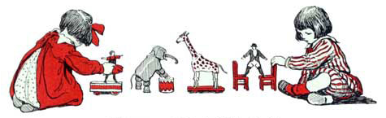
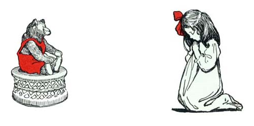
クリスマスイヴのこと どこの おうちも
ひとも ネズミも ひっそりしてる
だんろのしたには くつした ぶらりん
サンタが くるのを いまかと まってる

こどもたちは ぐっすり すやすや
おかしの ゆめを みてる さいちゅう
つまは スカーフ ぼくは ぼうしを かぶって
ねむろうと ベッドに ついた そのとき
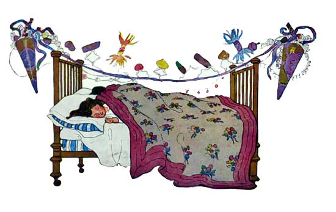
そとから ものおとが きこえてきたから
ぼくは とびおきて たしかめにいったんだ
ものすごい はやさで まどに かけより
かぎを はずして がらがら あけて
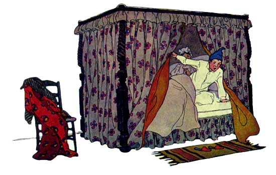
つもったばかりの ゆきが おつきさまの
ひかりで おひるみたいに あかるくって
びっくりしてると なんだか みえたんだ
ちいさなそりと ちっちゃなトナカイ ８とうも
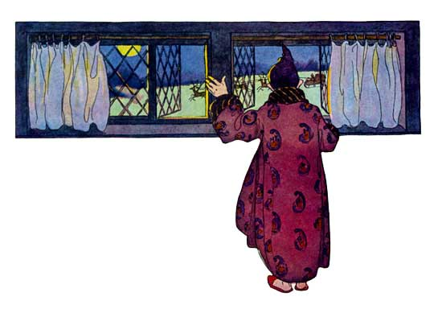
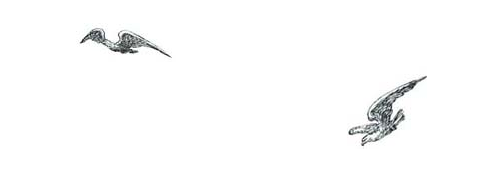
のってる おじさんも げんき いっぱい
きっと サンタクロースだって おもってね
とんでく トナカイは とりよりも はやく
サンタは くちぶえふいて なまえを おおごえで
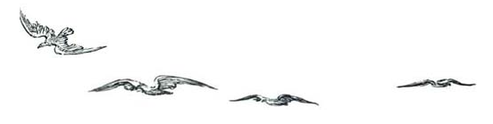
「おい ダッシャー ダンサー プランサー ヴィクセン！
そら コメット キューピッド ダンダー ブリクセム！
やねを のぼって かべを のぼって
ゆくぞ ゆくぞ そらゆくぞ！」
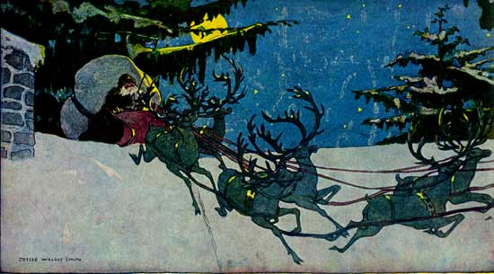
あらしに まきこまれた おちばみたいに
あたる てまえで まうえに あがって
トナカイは やねのうえへ たどりつき
そりは おもちゃ まんさい サンタも いるけど
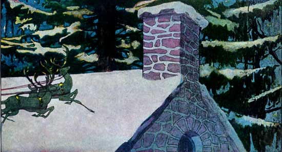
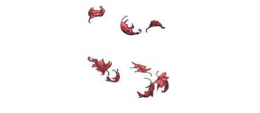
すると すぐに やねのうえから おとがして
トナカイの ひづめが ぱからん ぱからん
あたまを ひっこめ ふりかえってみると
どすんと サンタが えんとつを おちてきて
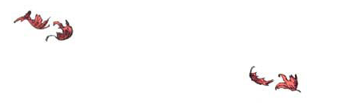
うえから したまで ふわっふわの ふく
どこもかしこも はいと すすで まっくろけ
おもちゃの ふくろを どさりと おろして
だいじそうに なかを あけてさ
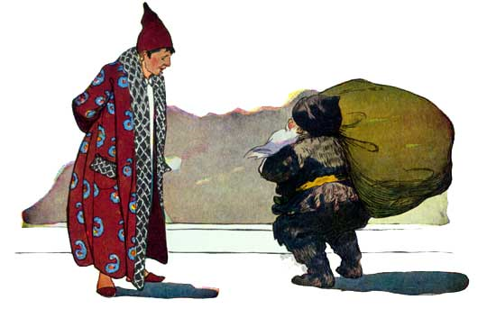
めは きらきら えくぼも にっこり
バラいろ ほっぺに さくらんぼの おはな
おどけた くちは ゆみの かたちで
あごひげは ゆきみたいに まっしろ
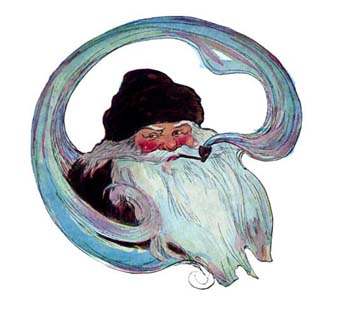
くちに くわえた パイプの けむりが
あたまのうえで うずを まいてて
まっかな おかおに でっぷり おなか
おおきく わらえば おなかも ぷるぷる
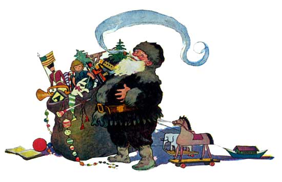
ぽっちゃりした ゆかいな おじさん
おもわず ぼくも わらっちゃって
こっちが こわがってないと わかると
くびを かしげて ウインクくれて
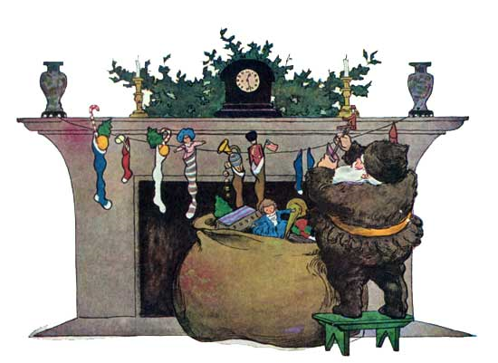
それから なんにも いわずに そのまま
くつしたに プレゼントを いれて くるり
ゆびを くちに しっと あてて こくり
うなずいて えんとつを のぼっていった
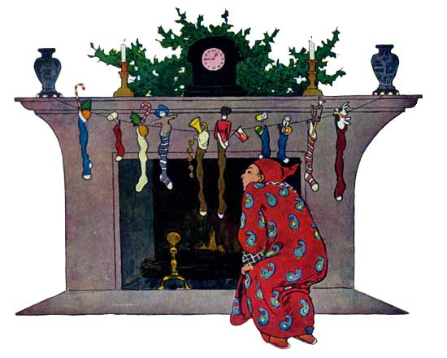
サンタが そりに のって くちぶえ ふくと
トナカイは はしりだして ふわふわ そらのむこうへ
でも みえなくなる まぎわに きこえてきたんだ
メリークリスマス おやすみ！ ってね
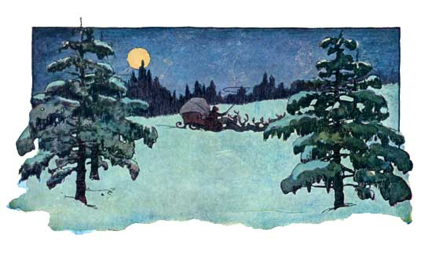